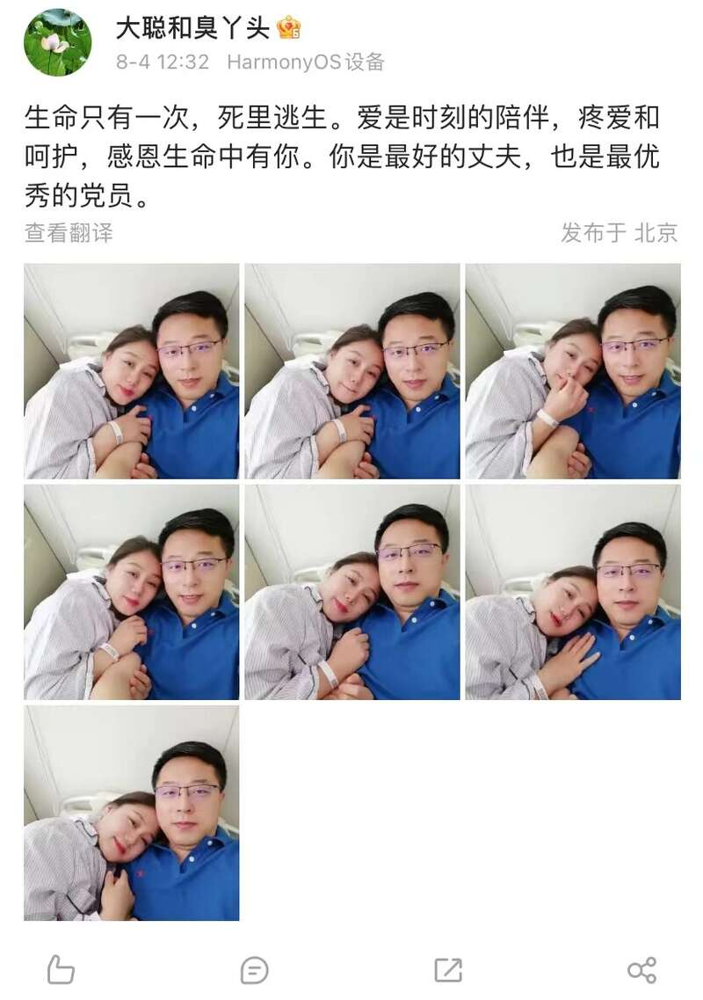
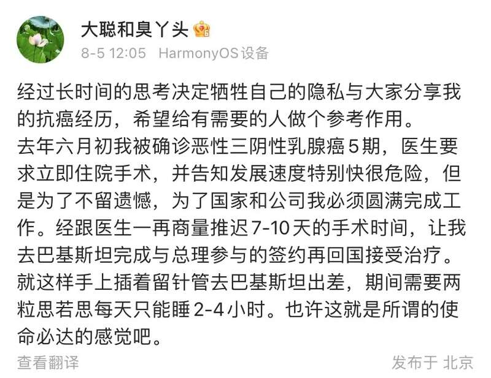
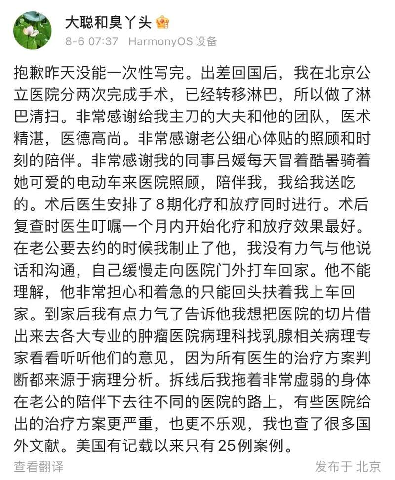
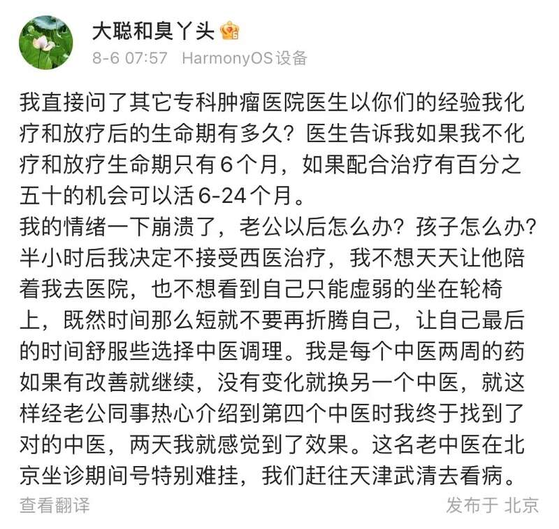

近日，很久没有发消息的“大聪和臭丫头”（外交部原发言人赵立坚妻子的微博账号）连续发布多条微博，说自己去年6月确诊了恶性三阴性乳腺癌5期。确诊后没有第一时间接受手术，而是坚持去巴基斯坦完成了任务。回国接受手术后，她决定不接受西医治疗，选择中医调理让自己最后的时间舒服些。她的微博还发布了多张两人恩爱合照，并称赵立坚是最好的丈夫和最优秀的共产党员。
“大聪和臭丫头”微博账号写道：“生命只有一次，死里逃生。爱是时刻的陪伴，疼爱和呵护，感恩生命中有你。你是最好的丈夫，也是最优秀的党员。”

赵立坚妻子随后在微博自述，自己去年被诊断患上乳腺癌5期，必须立即住院。但是为了国家和公司的利益，她依然选择了去巴基斯坦完成一次签约活动，回国后才去住院完成手术。
术后，医生告知如果她不化疗和放疗生命期只有6个月，如果配合治疗有百分之五十的机会可以活6-24个月。她最终决定不接受西医治疗，不想天天让丈夫陪着她去医院，也不想看到自己只能虚弱的坐在轮椅上，既然时间那么短就不再折腾，让自己最后的时间舒服些选择中医调理。



Advertisements